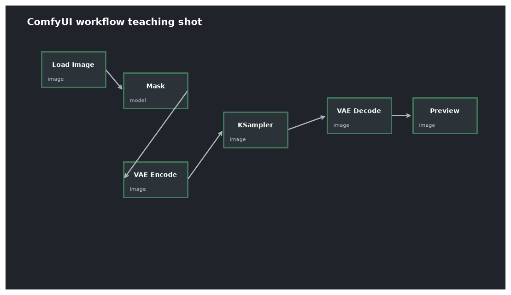

本讲目录
第 09 讲 · 图生图与局部重绘
文生图从纯噪声出发；但更多的日常任务是"在这张图的基础上……"——换风格、改质感、只修这一块。本讲两个主题共用同一条原理线（第 02 讲的闭式跳跃 + 第 05 讲的掩码缝合），也共用你已有的模型（SDXL base + SD2-inpainting 就能全部跑通）。

1. 图生图：denoise 是唯一的新东西
1.1 工作流改动（对照 wf03_sdxl_img2img.json）
相对文生图只换一个源头：Empty Latent Image 换成 Load Image → VAE Encode——你的图片被压进潜空间（第 04 讲），成为 KSampler 的起点。其余节点原封不动。
1.2 denoise 的准确含义（第 02 讲兑现）
denoise = d 的机制：用闭式跳跃把你的图加噪到全程的 \(d\) 处，再从那里往回去噪。\(d\) 越大，推得越深、原图结构冲刷得越多：
| denoise | 保留什么 | 典型用途 |
|---|---|---|
| 0.15–0.30 | 构图+主体+大部分细节 | 增质感、轻微风格化、放大后补细节（第 14 讲） |
| 0.35–0.55 | 构图+主体轮廓 | 换画风、材质重绘（从 0.45 起手最稳） |
| 0.60–0.75 | 只剩大构图 | 大改，"参考着画" |
| 0.85–1.00 | 几乎无 | 约等于文生图，原图只剩气息 |
两个配套认知：
- 实际执行步数 ≈ steps × denoise（只走后段日程）。denoise=0.3、steps=25 时真正只跑 ~8 步，快得很——所以低 denoise 迭代成本极低，可以放心多试；
- 提示词仍然重要：它描述的是"去噪的目的地"。图生图换风格时，提示词写目标风格 + 画面内容（内容也要写，否则模型对"这是什么"的理解只能靠残存噪声猜）。
1.3 输入图的预处理
进 VAE Encode 前把尺寸问题解决掉：分辨率调到模型的舒适桶（第 08 讲；ComfyUI 有 Image Scale 节点，长边 1024 左右），过大的图先缩——直接塞 4K 图进去既慢又容易出结构问题。输入图放 E:\AI\Inputs（第 06 讲的约定目录，Load Image 默认读这里）。
2. 局部重绘（Inpaint）：只动该动的地方
2.1 画遮罩
Load Image 节点上右键 → Open in MaskEditor：涂抹要重绘的区域（白=重绘，黑=保留），保存后该节点的 MASK 输出口就带上了遮罩。
2.2 两条路线（你的模型各对应一条）
路线 A · 通用模型 + 掩码缝合（wf04 的 A 版）：Load Image → VAE Encode (for Inpainting) 节点（吃 IMAGE + MASK），后接普通 KSampler。原理即第 05 讲的逐步缝合公式——保留区每步用原图真值覆盖。用 SDXL base 就能跑；grow_mask_by 参数把遮罩边缘外扩几像素（默认 6），给缝合留融合带，边缘生硬时第一个调它。
路线 B · 专用 inpaint 模型（wf04 的 B 版）：checkpoint 换成你已有的 512-inpainting-ema（SD2 系，512 分辨率），它的 U-Net 原生多吃"遮罩+挖空图"两个输入（第 05 讲），边界融合是训练出来的，大面积重绘更自然。代价：底模是老 SD2，画质上限不如 SDXL——小修用 A（质量好），大改用 B（融合稳），将来第 10 讲补一个 SDXL 系 inpaint 方案后 B 路线整体升级。
2.3 实操要领
- 提示词只描述遮罩区要出现的东西（"a red scarf"），不要描述全图——条件作用的主战场就是重绘区；
- denoise 在 inpaint 里同样生效：修瑕疵 0.4–0.6；换物体 0.8–1.0（要把旧内容完全冲掉）；
- 遮罩比目标大一圈：给模型融合的余地，贴边太紧必生硬；
- 修完一处再修下一处，多轮小改优于一轮大改（每轮都从上一轮的成品出发——这本身就是一条"人肉编排管线"）。
3. 组合拳：先全局后局部
真实工作里两者串用是常态，标准两段流：
图生图(denoise 0.45, 换风格) → 成品有小瑕疵(手/眼睛/背景穿帮)
→ inpaint 逐处精修(denoise 0.5, 遮罩只圈瑕疵) → 完稿
这正是第 07 讲"看懂复杂工作流"的骨架思维：网上那些大型"精修工作流"，粉线主动脉就是这两段，其余是自动化它的辅助节点（自动检测手/脸出遮罩之类，第 14 讲见 Impact Pack）。
上机任务
- 拿一张你的 VRChat 截图（放进
E:\AI\Inputs），跑wf03：固定种子，denoise 取 0.25 / 0.45 / 0.7 各一张，把"三档保留度"的体感建立起来； - 用 MaskEditor 圈出其中一张的背景，路线 A 换个背景（提示词只写新背景）；
- 同一个遮罩任务用路线 B 再跑一遍，对比边缘融合与画质差异，验证"小修 A 大改 B"。
到这里，"一张图的完整生命周期"（生成→变体→精修）你已经全部掌握，用的还只是机器上原有的三个模型。下一讲开仓补货：为你的显卡和动漫场景定制的第一批模型下载清单——生态补齐后，后面四讲的高级玩法才有子弹。